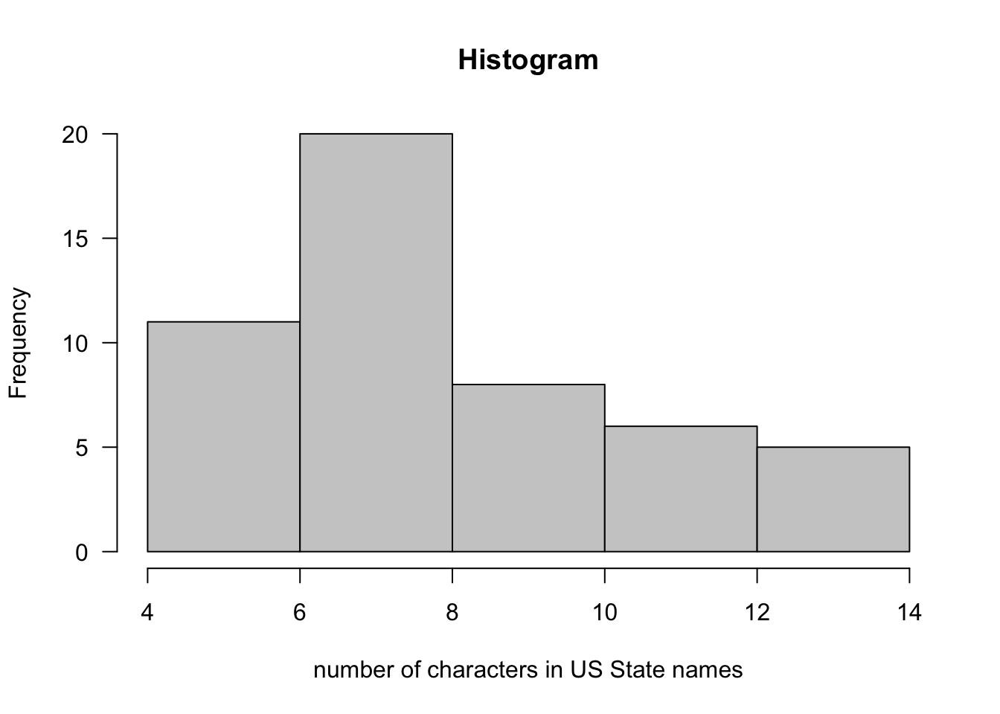

The labels on the rows such as Alabama or Alaska are displayed strings. Likewise, the labels of the columns—Murder, Assault, UrbanPop and Rape—are also strings.
1.1.1 Abbreviating strings
Suppose we want to abbreviate the names of the States. Furthermore, suppose we want to abbreviate the names using the first four characters of each name. One way to do that is by using the function substr() which substrings a character vector. We just need to indicate the start=1 and stop=4 positions:
This may not be the best solution. Note that there are four states with the same abbreviation "New " (New Hampshire, New Jersey, New Mexico, New York). Likewise, North Carolina and North Dakota share the same name "Nort". In turn, South Carolina and South Dakota got the same abbreviation "Sout".
A better way to abbreviate the names of the states can be performed by using the function abbreviate() like so:
If we decide to try an abbreviation with five letters we just simply change the argument minlength = 5
# abbreviate state names with 5 lettersabbreviate(states, minlength =5)
Alabama Alaska Arizona Arkansas California
"Alabm" "Alask" "Arizn" "Arkns" "Clfrn"
Colorado Connecticut Delaware Florida Georgia
"Colrd" "Cnnct" "Delwr" "Flord" "Georg"
Hawaii Idaho Illinois Indiana Iowa
"Hawai" "Idaho" "Illns" "Indin" "Iowa"
Kansas Kentucky Louisiana Maine Maryland
"Kanss" "Kntck" "Lousn" "Maine" "Mryln"
Massachusetts Michigan Minnesota Mississippi Missouri
"Mssch" "Mchgn" "Mnnst" "Mssss" "Missr"
Montana Nebraska Nevada New Hampshire New Jersey
"Montn" "Nbrsk" "Nevad" "NwHmp" "NwJrs"
New Mexico New York North Carolina North Dakota Ohio
"NwMxc" "NwYrk" "NrthC" "NrthD" "Ohio"
Oklahoma Oregon Pennsylvania Rhode Island South Carolina
"Oklhm" "Oregn" "Pnnsy" "RhdIs" "SthCr"
South Dakota Tennessee Texas Utah Vermont
"SthDk" "Tnnss" "Texas" "Utah" "Vrmnt"
Virginia Washington West Virginia Wisconsin Wyoming
"Virgn" "Wshng" "WstVr" "Wscns" "Wymng"
1.1.2 Getting the longest name
Now let’s imagine that we need to find the longest name. This implies that we need to count the number of letters in each name. The function nchar() comes handy for that purpose. Here’s how we could do it:
# size (in characters) of each namestate_chars =nchar(states)state_chars
To make things more interesting, let’s assume that we wish to select those states containing the letter "k". How can we do that? Very simple, we just need to use the function grep() for working with regular expressions. Simply indicate the pattern = "k" as follows:
# get states names with 'k'grep(pattern ="k", x = states, value =TRUE)
Instead of grabbing those names containing "k", say we wish to select those states containing the letter "w". Again, this can be done with grep():
# get states names with 'w'grep(pattern ="w", x = states, value =TRUE)
[1] "Delaware" "Hawaii" "Iowa" "New Hampshire"
[5] "New Jersey" "New Mexico" "New York"
Notice that we only selected those states with lowercase "w". But what about those states with uppercase "W"? There are several options to find a solution for this question. One option is to specify the searched pattern as a character class "[wW]":
# get states names with 'w' or 'W'grep(pattern ="[wW]", x = states, value =TRUE)
[1] "Delaware" "Hawaii" "Iowa" "New Hampshire"
[5] "New Jersey" "New Mexico" "New York" "Washington"
[9] "West Virginia" "Wisconsin" "Wyoming"
Another solution is to first convert the state names to lower case, and then look for the character "w", like so:
# get states names with 'w'grep(pattern ="w", x =tolower(states), value =TRUE)
[1] "delaware" "hawaii" "iowa" "new hampshire"
[5] "new jersey" "new mexico" "new york" "washington"
[9] "west virginia" "wisconsin" "wyoming"
Alternatively, instead of converting the state names to lower case we could do the opposite (convert to upper case), and then look for the character "W", like so:
# get states names with 'W'grep(pattern ="W", x =toupper(states), value =TRUE)
[1] "DELAWARE" "HAWAII" "IOWA" "NEW HAMPSHIRE"
[5] "NEW JERSEY" "NEW MEXICO" "NEW YORK" "WASHINGTON"
[9] "WEST VIRGINIA" "WISCONSIN" "WYOMING"
A third solution involves specifying the argument ignore.case=TRUE inside grep():
# get states names with 'w'grep(pattern ="w", x = states, value =TRUE, ignore.case =TRUE)
[1] "Delaware" "Hawaii" "Iowa" "New Hampshire"
[5] "New Jersey" "New Mexico" "New York" "Washington"
[9] "West Virginia" "Wisconsin" "Wyoming"
1.1.4 Some computations
Besides manipulating strings and performing pattern matching operations, we can also do some computations. For instance, we could ask for the distribution of the State names’ length. To find the answer we can use nchar(). Furthermore, we can plot a histogram of such distribution:
summary(nchar(states))
Min. 1st Qu. Median Mean 3rd Qu. Max.
4.00 7.00 8.00 8.44 10.00 14.00
# histogramhist(nchar(states), las =1, col ="gray80", main ="Histogram", xlab ="number of characters in US State names")

Let’s ask a more interesting question. What is the distribution of the vowels in the names of the States? For instance, let’s start with the number of a’s in each name. There’s a very useful function for this purpose: regexpr(). We can use regexpr() to get the number of times that a searched pattern is found in a character vector. When there is no match, we get a value -1.
# position of a'spositions_a <-gregexpr(pattern="a", text=states, ignore.case =TRUE)# how many a's?num_a <-sapply(positions_a, function(x) ifelse(x[1]>0, length(x), 0))num_a
If you inspect positions_a you’ll see that it contains some negative numbers -1. This means there are no letters a in that name. To get the number of occurrences of a’s we are taking a shortcut with sapply().
The same operation can be performed by using the function str_count() from the package "stringr".
# load stringr (remember to install it first)library(stringr)# total number of a'sstr_count(states, "a")
Notice that we are only getting the number of a’s in lower case. Since str_count() does not contain the argument ignore.case, we need to transform all letters to lower case, and then count the number of a’s like this:
# total number of a'sstr_count(tolower(states), "a")